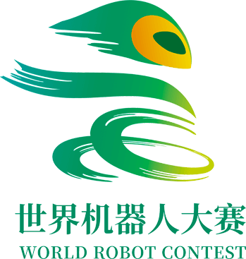

WRC赛事介绍
赛事概述
世界机器人大赛（World Robot Contest）由中国电子学会主办，自2015年起已成功举办了9届，由选拔赛（WRCT）、锦标赛（WRCC）、总决赛（WRCF）组成，共吸引了全球20余个国家近30万名选手参赛，被广泛赞誉为机器人界的"奥林匹克"。


赛事成就
- 自2019年连续得到了国家自然科学基金委员会的指导
- 自2020年连续入围了教育部办公厅公布的面向中小学生的全国性竞赛活动名单
- 实现了多个竞赛项目的大赛成绩国际互认
赛事愿景
通过多年的积淀成长，大赛已发展成为国内外影响广泛的机器人领域官方专业赛事，旨在不断发挥自身平台优势，激发机器人行业的科技研发潜力，成为推动全球创新型、应用型、技能型人才培养的重要力量。
赛事信息
比赛时间
2024年12月14、15日
比赛地点
北京市（具体地址另行通知）
报名方式
请点击下方按钮进行预报名，我们的工作人员会尽快与您联系。